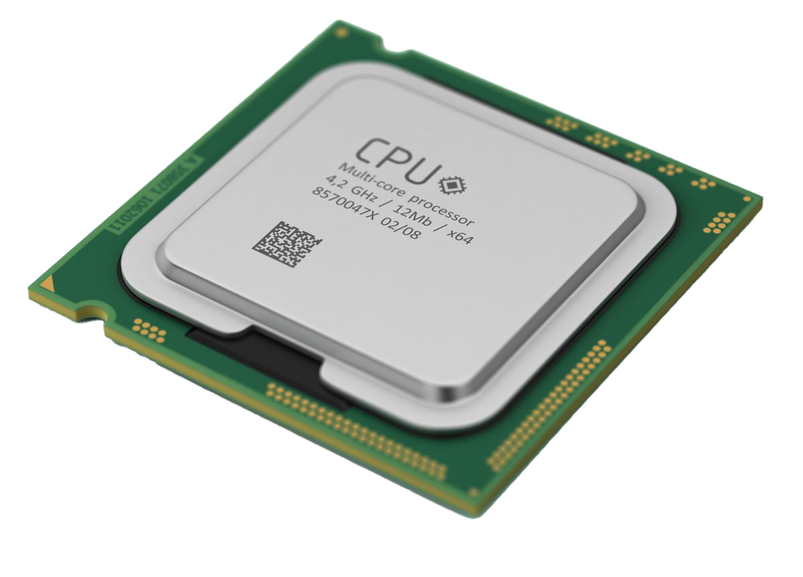

|
|
| FORM PEMBELIAN KOMPUTER DISINI!! |
Central Processing Unit
|
Central Processing Unit (CPU), atau sering disebut sebagai prosesor, adalah komponen utama dari sebuah komputer yang bertanggung jawab untuk menjalankan instruksi program. CPU menjalankan operasi dasar seperti aritmatika, logika, kontrol, dan input/output, yang semuanya diperlukan untuk menjalankan aplikasi dan sistem operasi. Dengan kata lain, CPU berfungsi sebagai otak dari komputer, mengendalikan berbagai tugas yang diperlukan untuk membuat sistem berfungsi dengan baik. Secara teknis, CPU terdiri dari beberapa bagian utama seperti unit kontrol, unit aritmetika logika (ALU), dan register. Unit kontrol mengarahkan operasi sistem komputer dengan menginterpretasikan dan mengeksekusi instruksi dari program perangkat lunak. ALU melakukan operasi aritmatika dan logika pada data, sementara register adalah penyimpanan kecil berkecepatan tinggi yang digunakan untuk menyimpan data sementara yang sedang diproses. Kecepatan dan efisiensi CPU biasanya diukur dalam gigahertz (GHz), yang menunjukkan seberapa cepat prosesor dapat menjalankan instruksi per detik. Perkembangan teknologi CPU terus berlanjut, dengan inovasi seperti arsitektur multi-core yang memungkinkan prosesor menjalankan beberapa tugas secara bersamaan, meningkatkan kinerja dan efisiensi. Selain itu, ada juga pengembangan dalam hal konsumsi daya yang lebih rendah dan ukuran fisik yang lebih kecil, membuat CPU lebih cocok untuk berbagai perangkat, mulai dari komputer desktop hingga smartphone. Inovasi-inovasi ini berkontribusi pada peningkatan kemampuan komputasi yang memungkinkan aplikasi lebih kompleks dan pengalaman pengguna yang lebih baik. |
 |